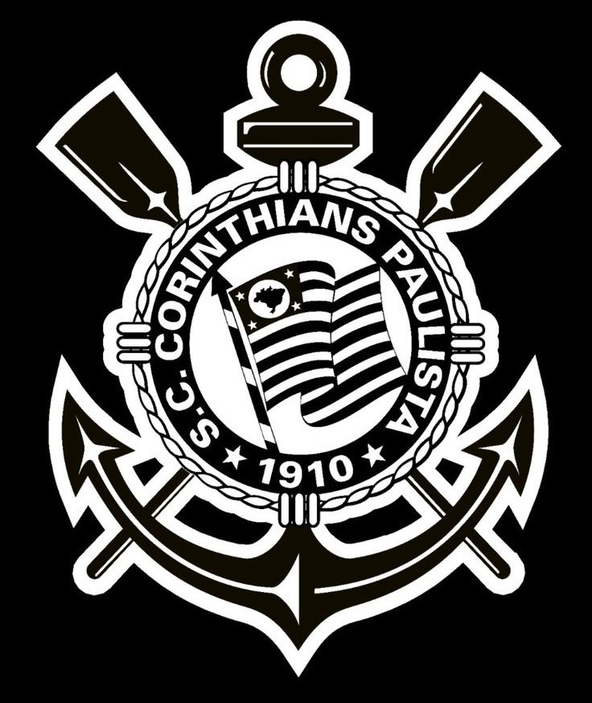
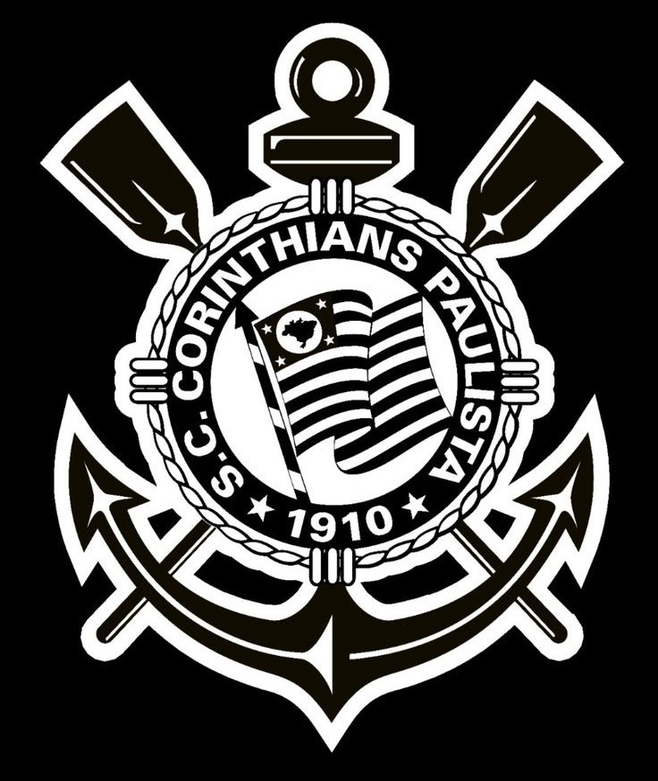

Olá,
 

I – Amar o Corinthians acima de qualquer resultado, partida e jogador!
II – Nada é mais importante do que o jogo do Corinthians!
III – Aqui é Corinthians. Aqui é na raça!
IV – A Fiel não vaia. A Fiel apoia os 90 minutos!
V – Nossas glórias mil são contra tudo e contra todos!
VI – O bando grita mais forte quando o Timão está perdendo!
VII – Sofredor hoje. Sofredor amanhã. Sofredor pra sempre. Graças a Deus!
VIII – Este time só tem um dono. Este time é do povo!
IX – Eu nunca vou te abandonar. Porque eu te amo!
X – Vai, Corinthians!
O Corinthians é muito mais do que um simples clube de futebol, é uma verdadeira instituição que transcende o esporte e se torna parte essencial da cultura brasileira. Fundado em 1910 por um grupo de operários do bairro do Bom Retiro, em São Paulo, o Timão nasceu para representar as classes trabalhadoras e se tornou um símbolo de resistência e superação. A torcida corinthiana, conhecida como Fiel, é uma das mais apaixonadas e numerosas do mundo, capaz de transformar estádios em verdadeiros caldeirões e de empurrar o time rumo à vitória com sua energia contagiante. É essa ligação única entre clube e torcida que faz do Corinthians muito mais do que um time de futebol, é uma família, é uma nação. O manto alvinegro, com suas listras verticais pretas e brancas, é reconhecido em qualquer lugar do mundo e carrega consigo toda a história e tradição do clube. Ao longo dos anos, grandes craques vestiram essa camisa e deixaram sua marca nos gramados, como Sócrates, Rivellino, Marcelinho Carioca, Ronaldo Fenômeno, entre outros. Mas o Corinthians não se resume apenas a seus ídolos, é também uma história de superação e conquistas. Ao longo de sua trajetória, o clube acumulou títulos importantes, como o Campeonato Brasileiro, a Copa do Brasil, o Campeonato Paulista e, o mais desejado de todos, a Copa Libertadores da América e o Mundial de Clubes da FIFA, ambos conquistados em 2012. Mais do que um clube de futebol, o Corinthians é uma paixão que atravessa gerações e fronteiras, unindo pessoas de todas as origens e classes sociais em torno de um mesmo ideal. É o amor pelo Timão que faz milhões de torcedores se emocionarem a cada gol, a cada vitória, a cada título conquistado. E assim, com sua história rica e sua torcida apaixonada, o Corinthians segue firme em sua missão de representar não apenas uma cidade ou um estado, mas todo um país, levando consigo o orgulho e a garra de ser brasileiro e corinthiano. Vai, Corinthians!
2024 ©SPTech. Todos os direitos reservados.